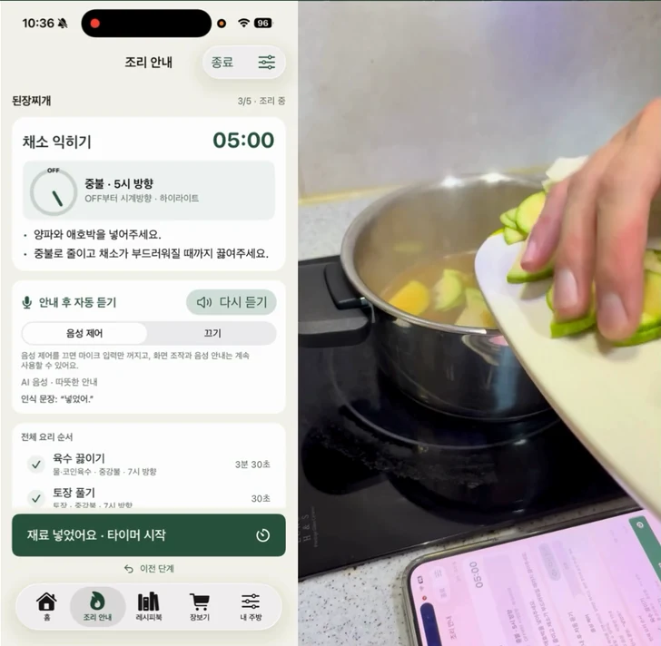
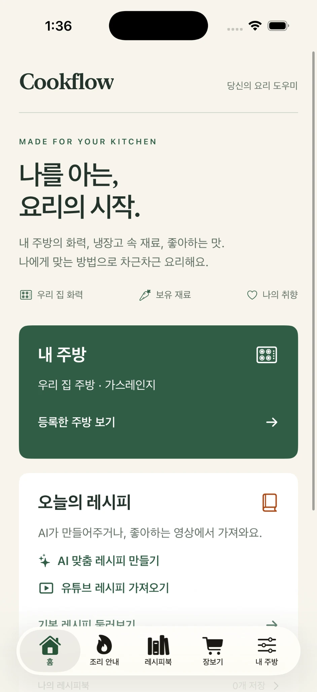
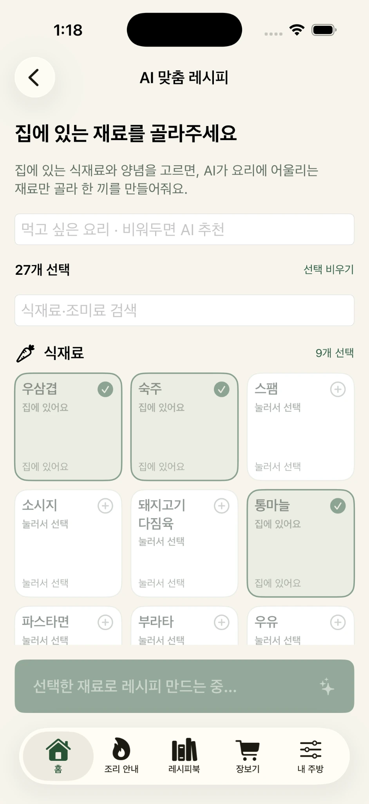
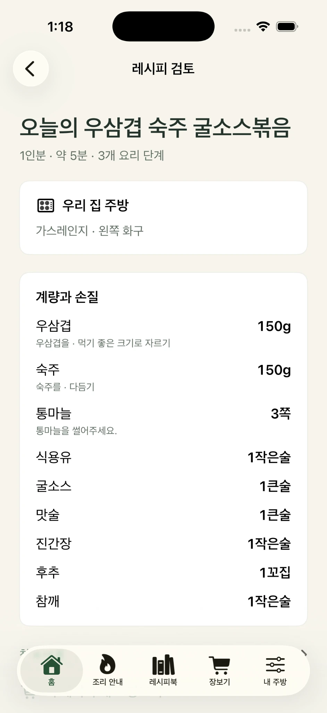
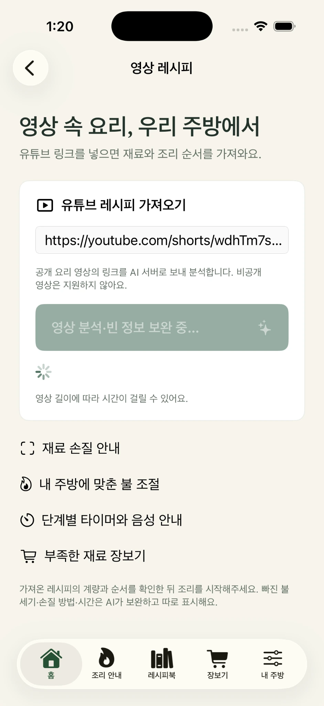
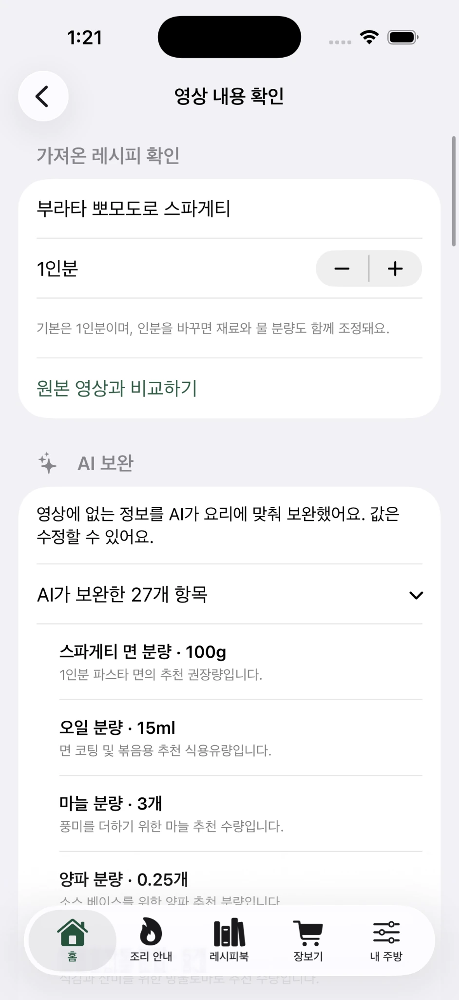
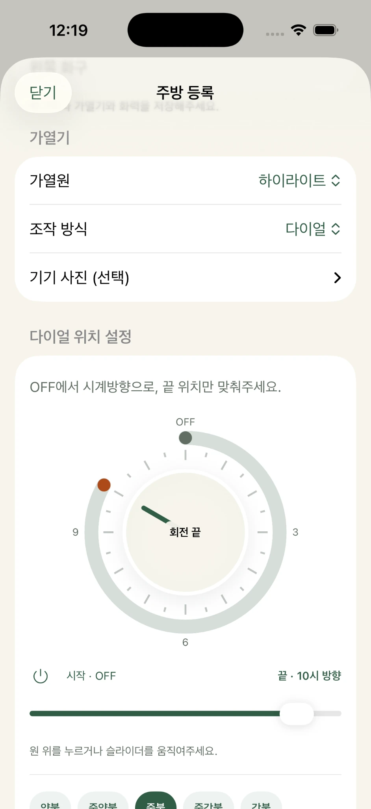
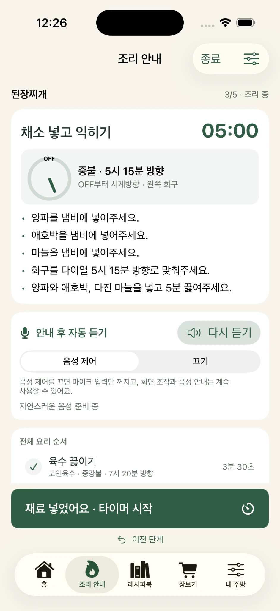

메뉴 고민
냉장고에 있는 재료로
무엇을 만들 수 있을까?
AI COOKING ASSISTANT
집에 있는 재료에서 완성된 한 끼까지.
CookFlow가 내 주방에 맞는 요리를 함께합니다.


THE PROBLEM
무엇을 만들지 고민하고, 빠진 정보를 찾고,
조리 중에도 화면을 확인해야 했으니까요.
냉장고에 있는 재료로
무엇을 만들 수 있을까?
영상에 없는 계량과
손질 방법은 어떻게 채울까?
요리하는 동안 계속
휴대폰을 만져야 할까?
THREE WAYS TO COOK
재료를 고르거나 영상을 가져오고,
내 주방에 맞는 안내를 따라갑니다.
01 AI RECIPE
냉장고 속 재료와 먹고 싶은 메뉴를 선택하면, AI가 그에 맞는 레시피를 만듭니다.


02 YOUTUBE RECIPE
유튜브 링크를 입력하면 영상의 재료와 순서를 가져오고, 빠진 정보를 AI가 보완합니다.
AI가 보완한 정보는 조리 전 확인할 수 있습니다.


03 COOKING GUIDE
내 화구에 맞는 불 세기와 조리 순서를 안내하고, 타이머와 음성 제어를 함께 사용합니다.
요리에 집중할 수 있도록
단계와 시간을 한 화면에서 확인합니다.


REAL COOKING DEMO
제작자가 직접 촬영한 시연 영상입니다.
재료 선택부터 조리 장면까지 확인해 보세요.